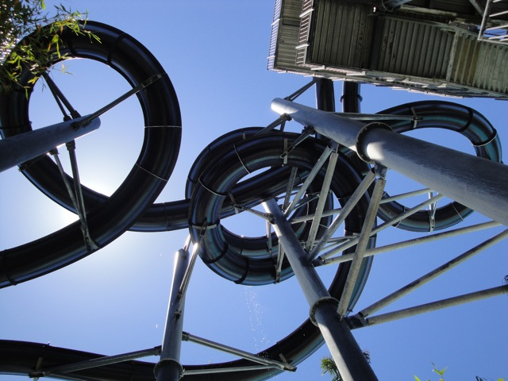
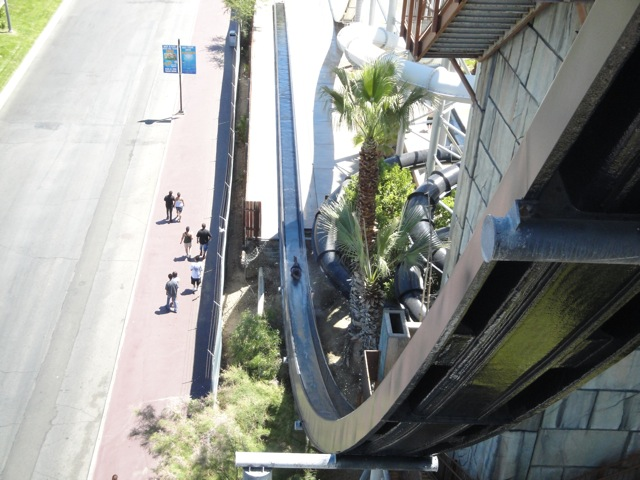
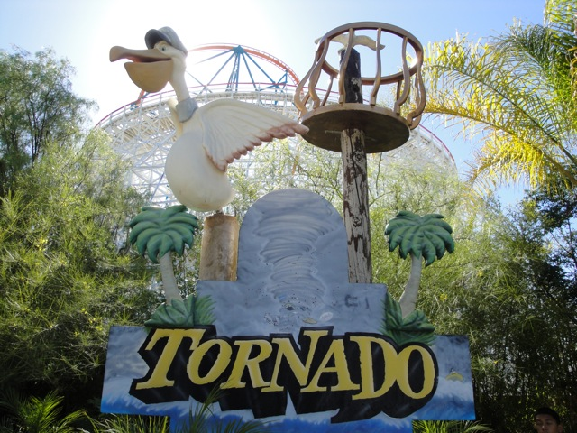
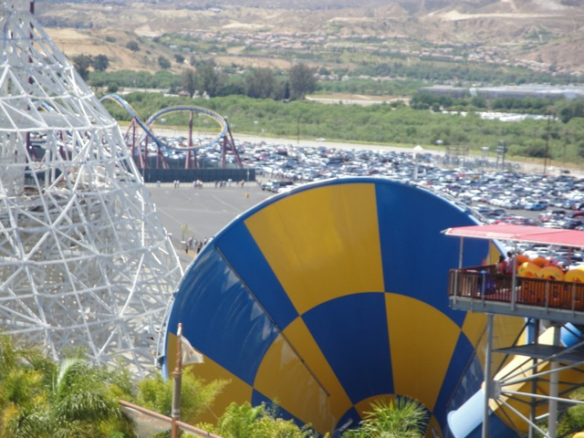
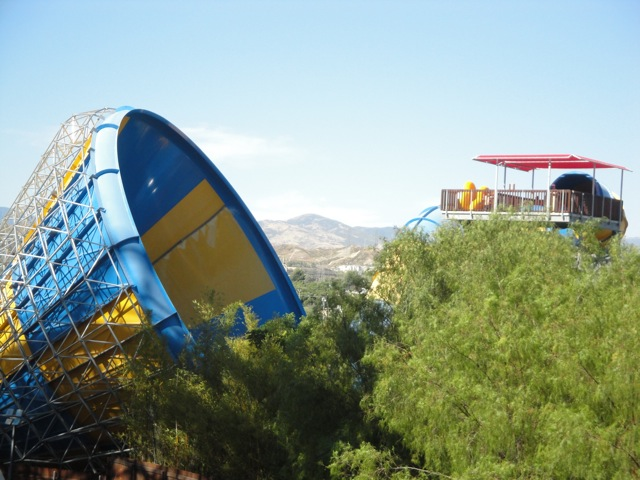
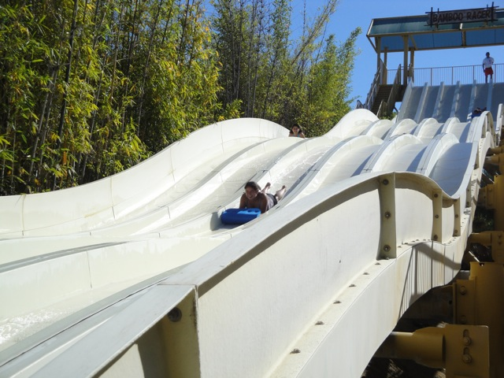
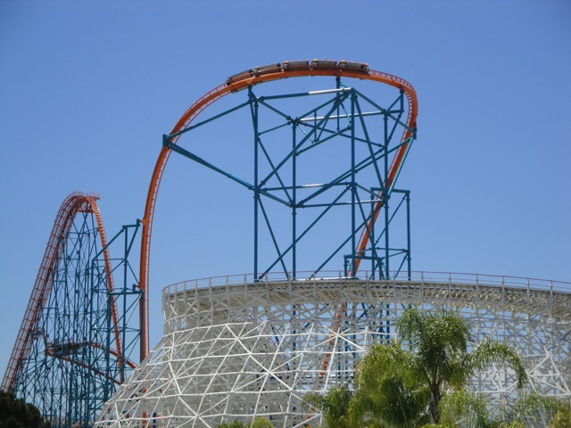

SFHH/SFMM 2010
All right. Our yearly trip to Six Flags Hurricane Harbor has come.
First slide of the day, Gator Gorge.
 "Hey Dude!! Wanna skip across water after riding Gator Gorge? Try out Cody's School of Water Skipping!!! In just three days, you'll be skipping across water like a pro!!! What are you waiting for!! Call today!!!!"
"Hey Dude!! Wanna skip across water after riding Gator Gorge? Try out Cody's School of Water Skipping!!! In just three days, you'll be skipping across water like a pro!!! What are you waiting for!! Call today!!!!"
 Marathon time.
Marathon time.
 While I like all the slides at the Taboo Tower Complex, Secret Passage is by far the best one. It's just so fast and twisty and Maverickish. (I'm pretty sure you can tell which one is Secret Passage.)
While I like all the slides at the Taboo Tower Complex, Secret Passage is by far the best one. It's just so fast and twisty and Maverickish. (I'm pretty sure you can tell which one is Secret Passage.)
Here you can get a good look at some of the biggest slides at Six Flags Hurricane Harbor.
 Time for the best slide at Six Flags Hurricane Harbor.
Time for the best slide at Six Flags Hurricane Harbor.

Nope. Not Twisted Fang & Coiled Cobra. We stayed away from those death machines today.
 Instead, we'll be riding Venom Drop!! =)
Instead, we'll be riding Venom Drop!! =)

What the hell is the general public so scared of? It's a really fun water slide.
Luckily, most of those cars are for Six Flags Magic Mountain. Memorial Day Weekend is a great weekend for Hurricane Harbor. (Nobody knows its open then.)

Another really fun slide at SFHH.

Today's Tornado ride was really great as we got some airtime since our raft was at an angle at the exit. (It's hard to explain.)

Tornado Sideboob.

"Hurry up little girl!! You can't possibly be THAT bad at water slide racing!!"
Ahh Damn!!! The Skittles Gay Pride Escelator is down for the day. I'll just have to settle for the stairs.
While I'm sure kids can have fun here...
 Why have them waste their time there when they can have fun in Mr. Six's Splash Island.
Why have them waste their time there when they can have fun in Mr. Six's Splash Island.
That's right. Today was Mr. Six's Splash Island's second day open to the public.
This is a HUGE improvement over the old kiddy area because not only are kids having more fun, but I also love these things. They are just so damn fun.
When the Fun-O-Meter reaches 6, that bucket dumps gallons of water on you. (And that bucket fills up really f*cking fast!!!)
Thank God Mr Six likes surfing in his tuxedo. I can only imagine the horrors of if he surfed like the rest of society.
While I didn't go down that red slide, I did go down a couple of the slides in the Complex, such as the green slide, the blue slide, and the yellow slide. They all sucked. But here, it's not about slides, it's about dumping buckets of water on other people and then getting drenched by the giant bucket.
Speaking of the giant bucket...
That thing gets you DRENCHED!!!!!!!!!
Do not listen to the sign!! The sign feeds you lies!!!!
 And now begins the Magic Mtn part of the update. As you can see, it was PACKED!!!!! This is the line for Guest Relations!!!
And now begins the Magic Mtn part of the update. As you can see, it was PACKED!!!!! This is the line for Guest Relations!!!
How's it going Flashback?
Luckily, we were able to get this Funatics Skip the Line Pass. This thing saved our asses and was REALLY helpful today. (A little more helpful than Six Flags had intended.)
 X2 was hauling ass. As usual.
X2 was hauling ass. As usual.
 Revolution on the other hand, was not. As usual.
Revolution on the other hand, was not. As usual.
Ok. Now I know what you're thinking. "You've been asking for a single riders line for a while, and now that a ride got one, you're giving it a thumbs down!! What the f*ck is wrong with you!!!??" Well, let me tell you all the things wrong with this single riders line. First off, it's not that helpful if the ride ops don't even know it exists. Second of all, as you can see, this single riders line is at the exit. Well the problem with that is that while there are plenty of avaliable seats, they are all on the other side of the station, as when someone rides as a single rider, they slide all the way over not intending for anyone else to sit there. So unless you want to climb over somebody, you're never going to get on the ride. I'm sorry Six Flags, but this Revolution Single Riders Line fails. Please reroute it to the station so that people are actually able to sit in the empty seats without having to climb over people. Thank you.

We also managed to get on Goliath today.
 And DejaVu.
And DejaVu.
We also got a Two Free Sodas Deal thanks to Funatics. This coke was much better than the Cherry Coke I had at lunch. And I'm not saying that because it was free.
And outside Six Flags Magic Mtn and Hurricane Harbor, they were passing out free samples of Pretzal M&Ms. They're currently my 2nd Favorite type of M&Ms right after the Peanut Butter ones. Go out and buy some. They're awesome!!
Home